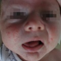
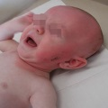
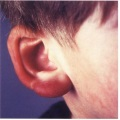
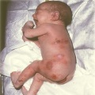
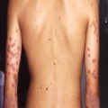
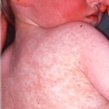
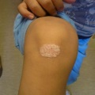

Erkrankungen:
-

Akne
Acne vulgaris
-
Arzneimittelexanthem
Ampizillin-, Amoxicillin- Exanthem
-

Atopisches Ekzem
Ekzema infantum, akute Neurodermitis
-
Blaschko-Linien
Lichen striatus, incontinentia pigmenti, epidermale naevus
-

Borreliose, Borrelieninfektion
Lymphozytom - Neuroborreliose
-
Cutis marmorata teleangiectatica congenita
CMCT cutis marmorata teleangiectatica congenita
-
Dermatitis herpetiformis Duhring
Dermatitis herpetiformis Duhring Pemphigoid IgA-Dermatose
-

Dreitagefieber
exanthema subitum 3-Tage-Fieber
-
Ekzema infantum leichte Form
Ekzem Minimalzeichen leichte Form
-

Epidermolyse bullosa hereditaria
bullöse Erkrankungen
-
Eruptives Hämangiom
Pyogenes Granulom
-

erythema exsudativum multiforme
erythema exsudativum multiforme
-

erythema nodosum
nodöses Erythem
-
Erythrasma
Intertriginöse dermatitis
-
Gefäßmissbildungen
naevus flammeus Gefäßanomalien
-
Gürtelrose
Herpes zoster
-
Gianotti-Crosti-Syndrom
infantile papulöse akrodermatitis akrodermatitis papulosa eruptiva infantilis
-

Hämangiome I
Hämangiome Blutschwämmchen
-

Hämangiome II
Hämangiome im Gesicht kritische Lokalisation
-
Hämangiome Behandlung mit Propranolol
Hämangiom-Behandlung Propranolol
-
Hand-Fuß-Mund- Erkrankung
hand-foot-mouth disease
-
Handschuh-Socken Syndrom
papular pruritic gloves ans socks syndrome (PPGSS)
-

Herpes simplex- Infektion
herpes-simplex- Virus
-
Hidradenitis
Rekurrierende palmoplantare Hidradenitis
-
Ichthyosen
Fischschuppenkrankheit
-
Impetigo contagiosa
Schälblasen Eiterflechte Grindflechte
-
Insektenstich
Insektenstiche, infizierte
-

Kawasaki Syndrom
mucokutanes Lymphknotensyndrom
-
Kerion Celsi
Tiefe Pilzinfektion tinea capitis Trichophytie
-
Keratosis palmoplantaris diffusa
Keratosis palmoplantaris diffusa
-

Kindsmisshandlung
battered child Misshandlung
-

Kuriositäten
Kuriositäten
-
Lupus erythematodes
Lupus erythemotodes neotataler lupus erythemtodes LE
-
Lyell Syndrom
Stevens-Johnson Syndrom toxische epidermale Nekrolyse (TEN)
-

Masern
Morbilli
-
Mastozytose
lokale Mastozytose urtikaria pigmentosa
-
Meningokokken- Meningitis/Sepsis
Meningokokkensepsis Waterhouse-Friderichsen
-
Milbenbefall, Trombidiose
Trombidiose Herbstkrätze "Beiß"
-

Onychomykose
Pilzinfektionen Nagelpilz
-
Pemphigus
pemphigus vulgaris
-

Pityriasis lichenoides et varioliformis acuta
pityriasis lichenoides et varioliformis acuta (PLEVA)
-
Pityriasis rosea
Röschenflechte Primärmedaillon
-
Pityriasis versicolor
Pilzinfektion
-

Psoriasis
Schuppenflechte psoriasis vulgaris psoriasis guttata
-
Quinke- ödem
urtikaria factitis papuläre urtikaria urtikarielles Exanthem
-

Ringelröteln
erythema infectiosum
-
Röteln
rubella konnatale Rötelnmissbildung
-

Scharlach
Scarlatina
-
Scharlach -leichte Form
Scarlatinella
-

Skabies
Krätze
-
Soordermatitis
Windeldermatitis Candida albicans
-

Staphylokokkeninfektion
Staphylococcal scaled skin syndrome
-
Tinea corporis
Hautpilz-Infektion
-
Unilaterales laterothorakales Exanthem
Unilaterales laterothorakales Exanthem (ULE)
-

Vaskulitis Schönlein-Henoch
Kokardenpurpura M. Seidlmmayer
-
Wanderröte
Erythema chronicum migrans
-
Wärmeschaden
Erythema ab igne
-
Warzen, Dellwarzen
verrucae plantares, mollusca contagiosa
-
Windpocken
Schafblattern Varizellen
-

Xanthogranulom
Xanthogranulom